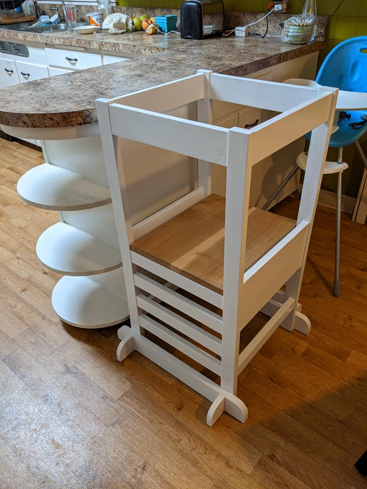
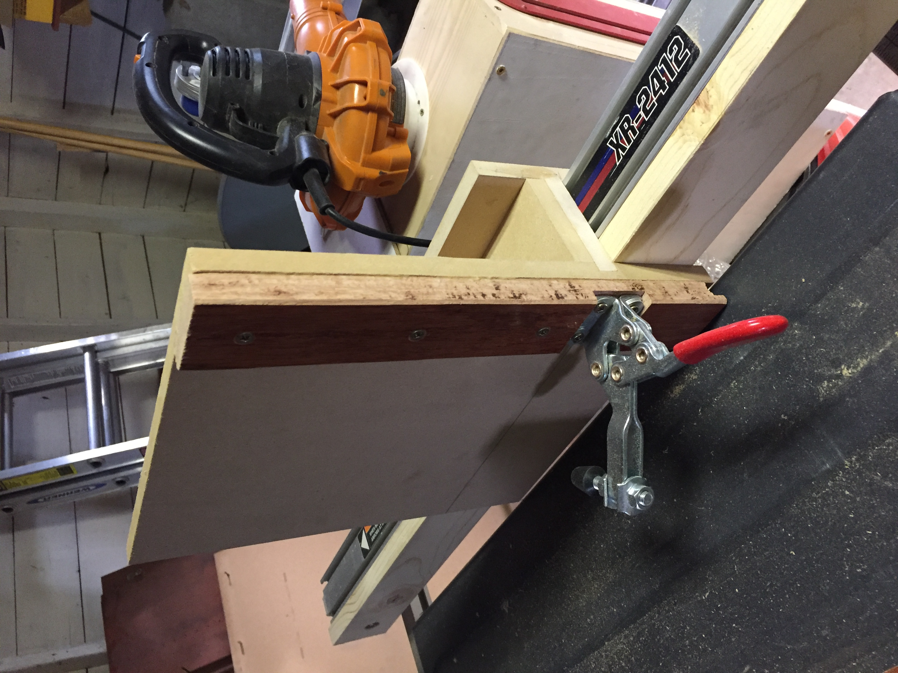

Learning Tower

Concept
I modified these plans from Ana White by removing the arch shape and using mortise and tenon joints instead of the pocket screws. I could have easily done it with the pocket screws and had a great result, but I wanted to challenge myself doing a whole bunch of morises and tenons joints.
I used this project to practice making mortise and tenon joints, as my first real project (besides my miter saw stand) used a tenon jig that I made to fit over the fence of my table saw. The mortises were made using my drill press. I assembled two of the sides before adding the mortises for the biggest side panels, and drilling out the mortises on these pieces with the drill press was the most awkward step. The tenon jig was not perfect - I had to constantly apply a sideways pressure into the fence to keep it from wobbling.
.
Thoughts
This was a great project, and with the mortise and tenon joints it gave me a chance to challenge myself.
The adjustable floor has worked well as my kid has grown. We probably won't use it all the way to the bottom rung, as a step stool might work just as well at that point.

My only complaint about the project is that I used some housepaint to finish it. I would have left it with just wood finish, but there were a number of blemishes in the wood when I bought it and more that I added while planing the pieces. I patched these with some wood filler. I put the paint on in a way that left a lot of drips and blops. Since it is used by a preschooler for all kinds of snacks and other activities, it been picking up all kinds of smudges and dirt, and I haven't found a good cleaner that actually removes them.